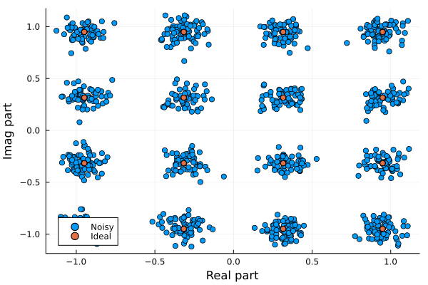

Transmission of xQAM with additive white Gaussian noise
To simulate a transmission of QPSK // 16QAM // 64QAM // 256QAM other a white additive Gaussian noise and display the received constellation, the following code can be used
Transmitter
using Plots
# --- Parameters
snr = 20;
mcs = 16;
nbBits = 1024* Int(log2(mcs));
# --- Binary sequence generation
bitSeq = genBitSequence(nbBits);
# --- QPSK mapping
qamSeq = bitMappingQAM(mcs,bitSeq); nothingChannel
# --- AWGN
# Theoretical power is 1 (normalized constellation)
qamNoise, = addNoise(qamSeq,snr,1); nothingReceiver
# --- Binary demapper
bitDec = bitDemappingQAM(mcs,qamNoise);
# --- BER measure
ber = sum(xor.(bitDec,bitSeq)) /length(bitSeq);
# --- Display constellation
plt = scatter(real(qamNoise),imag(qamNoise),label="Noisy");
scatter(plt,real(qamSeq),imag(qamSeq),label="Ideal");
xlabel!("Real part");
ylabel!("Imag part");It plots the received constellation impaired by noise (here a 20dB SNR is used) 